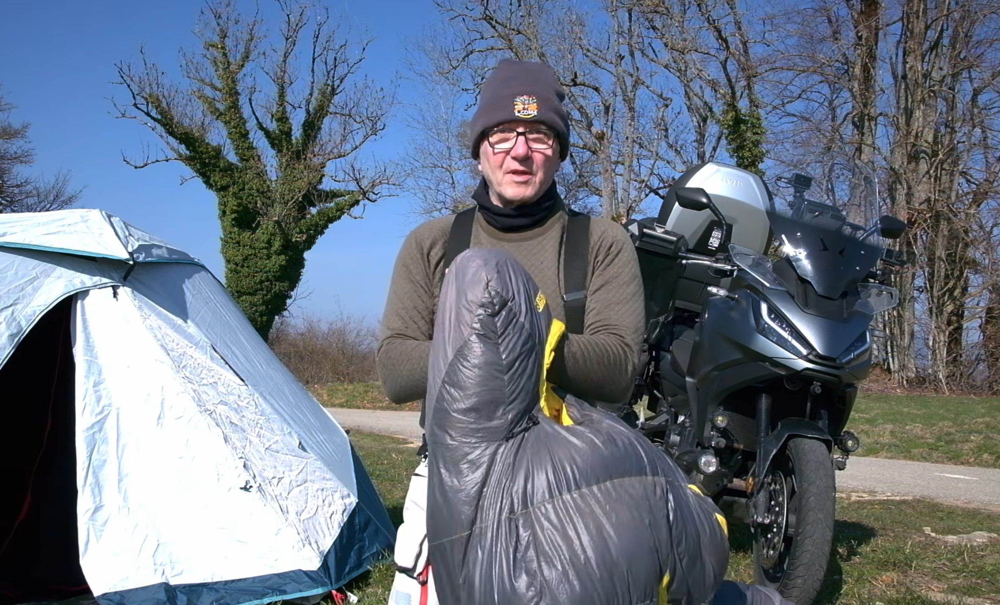
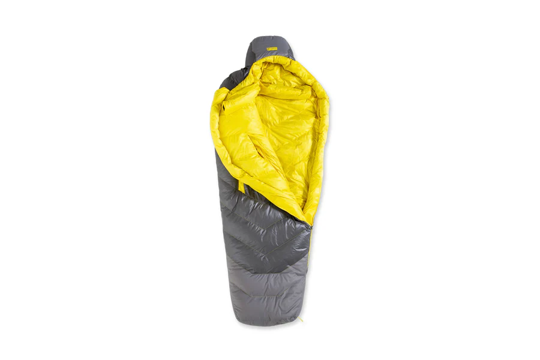
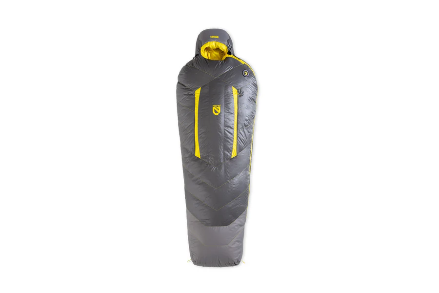
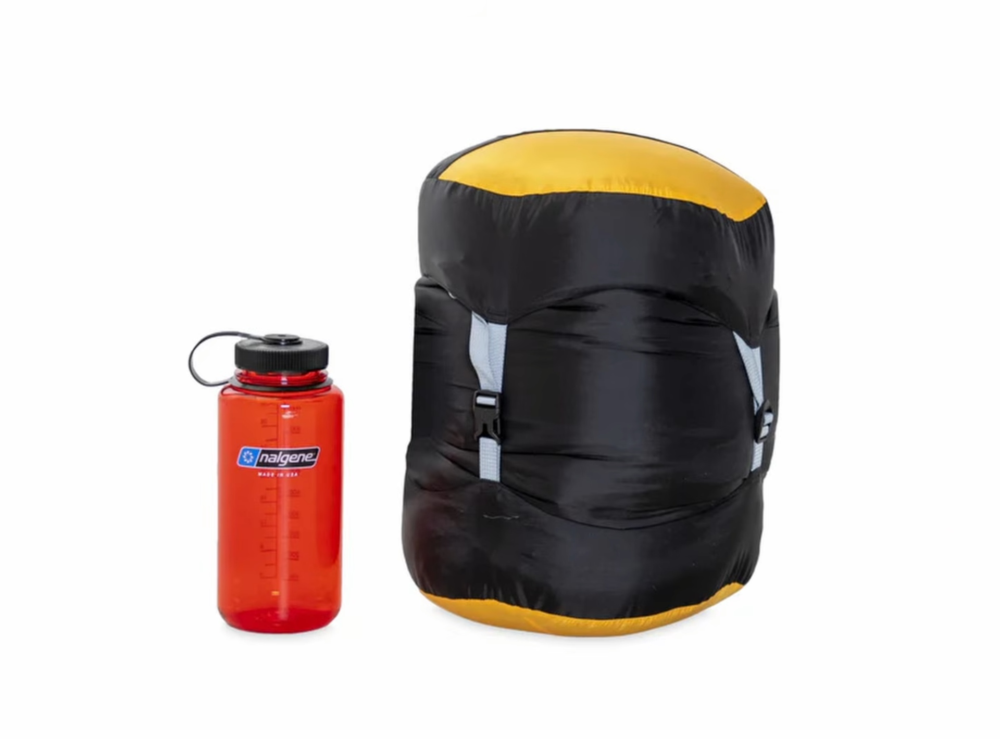
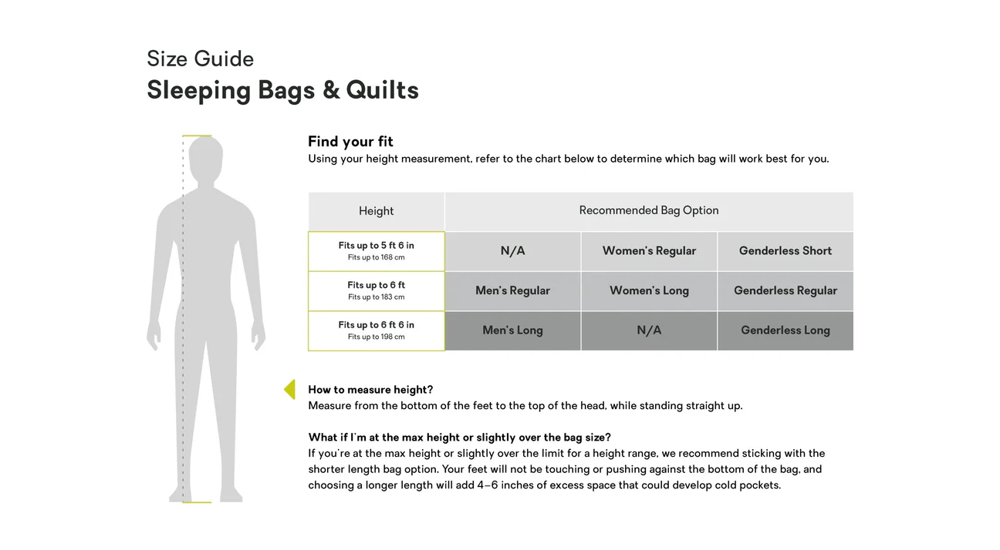

Après mon expérience délicate au Cap Nord avec du matériel qui m'a laissé tomber, j'ai investi dans de nouveaux équipements de camping. Entre 2 et 4°C cette nuit, j'ai pu tester mon nouveau duvet Nemo Sonic dans des conditions réelles. Lors de mon road trip au Cap Nord le duvet Nemo Disco, un bon duvet mais vraiment trop just. A utiliser avec des températures qui ne descendent pas en dessous des 5°.
🔍 Présentation

Le duvet Nemo Sonic 4 saisons

C'est un duvet prévu pour les conditions extrêmes, avec une température de confort autour de 0°C. Ce qui m'a séduit, c'est son système de fermetures éclair latérales : tu as deux petites fermetures de chaque côté qui te donnent environ 10 cm d'aisance supplémentaire quand tu les ouvres. Pour quelqu'un comme moi qui dort sur le côté, c'est un vrai plus.
La cagoule est vraiment imposante et bien conçue. Une fois dedans, tu n'as plus besoin de bonnet et selon ta position, le haut du duvet peut même te couvrir les yeux complètement. Avec mon ancien duvet j'avais vraiment eu froid à la tête, ce qui n'avait pas non plus arrangé la qualité de mon sommeil. Il y a une petite poche pour smartphone, même si mon 6 pouces rentre tout juste.
Deux bandes intérieures qui se superposent parfaitement, un boudin tout le tour avec serrage au niveau des épaules, et un scratch de fermeture qui se replie sur lui-même pour éviter les gratouilles.
Matelas Sea to Summit Comfort Plus

C'est un matelas avec mousse à mémoire de forme, bien différent des matelas pneumatiques classiques. Pour mon gabarit de 77-78 kg, c'est tout juste au niveau largeur - mes épaules arrivent pile aux bords. Il affiche un R4 en indice d'isolation.
Lampe frontale Olight Perun 3


Une lampe frontale avec base magnétique qui sert aussi pour la recharge - pas besoin de câble USB supplémentaire. Tu peux la détacher et l'accrocher sur n'importe quelle surface ferreuse. L'éclairage est vraiment puissant, presque comme un phare de moto. La lampe Olight Perun 3 est vraiment taillée pour les bivouac. En plus d'une garantie a vie sur les corps de la lampe sa batterie de 5000 mAh est vraiment préformante.
🏍️ Retour terrain

Une nuit de test concluante
Cette nuit par 2-4°C, j'étais tellement au chaud dans le Nemo Sonic que j'ai fini par enlever une couche. J'ai dormi juste en t-shirt mérinos manche courte et j'ai même failli retirer mes chaussettes tellement j'avais chaud aux pieds. Quel contraste avec mes galères au Cap Nord !
Le matelas Sea to Summit m'a bien isolé du sol, même posé sur de l'herbe à vache avec des irrégularités. Pas de sensation de bosses dans le dos, contrairement aux matelas pneumatiques qui bougent trop et font du bruit quand tu te retournes.
Cette nuit, j'ai volontairement laissé mon petit matelas aluminisé de côté pour tester l'isolation directe. Le résultat est concluant.
La lampe Olight à l'usage
J'ai bricolé sur la moto avec la frontale et testé son éclairage en pleine nuit : c'est impressionnant ! La base magnétique est pratique pour l'accrocher selon tes besoins, même si sur une moto en alu, les points d'accroche ferreuse sont limités au cadre.
🎯 À qui ça s'adresse
Ce trio s'adresse aux motards qui font du camping sauvage dans des conditions un peu difficiles. Si tu as déjà galéré avec du matériel bas de gamme qui te laisse claquer des dents, tu comprendras l'investissement.
Le duvet Nemo convient parfaitement à ceux qui dorment sur le côté grâce à ses zips d'aisance. Pour les gabarits moyens comme le mien, le matelas Sea to Summit fait l'affaire, mais attention si tu es plus large d'épaules.
Avec mes 77-78 kg, mes épaules touchent les bords. Si tu fais du XL, regarde plutôt la version Large.
⚖️ Mon verdict
Après les galères du Cap Nord où les nuits pourries s'enchaînaient et me plombaient les journées de route, je suis content de cet investissement. Le duvet Nemo Sonic tient ses promesses, peut-être même trop bien vu que j'avais chaud !
Le matelas Sea to Summit est un bon compromis entre confort et isolation, bien plus stable que les pneumatiques classiques. Et la lampe Olight, avec son concept multifonction sans être gadget, complète bien l'ensemble.
Quand tu enchaînes les kilomètres et les bivouacs, une mauvaise nuit se paie cash le lendemain. Autant mettre le prix dans du matériel qui fonctionne.
Le design gris et jaune du duvet est sympa, même si ma tente Black Diamond avec son intérieur tout noir, c'est comme être dans une salle de ciné éteinte - il faut absolument une lampe !